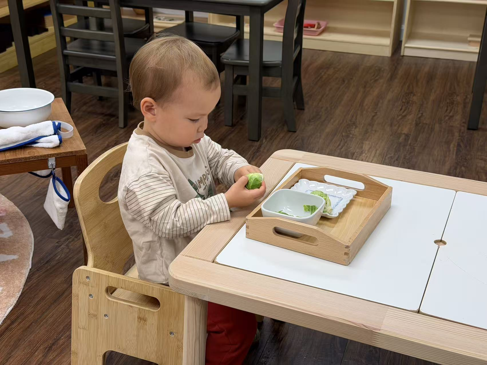

Children build fine motor control and sensory awareness by peeling leaves off a whole cabbage one at a time.
Fine Motor
Concentration
Independence
Nature
Materials
How to Present
- Invite the child to the tray and name the cabbage.
- Demonstrate gently peeling one leaf at a time and placing it in the bowl.
- Invite the child to continue peeling leaves at their own pace.
- Talk about the colors and textures of the leaves as you go.
Notes
A simple, repeatable sensory activity that builds fine motor control and focus.